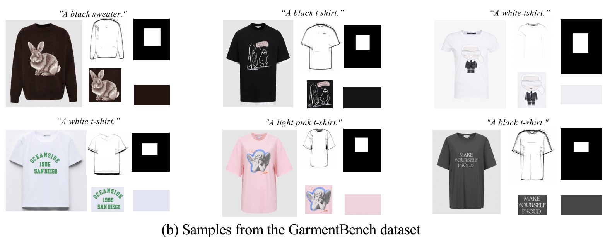

Abstract
This paper presents IMAGGarment-1, a fine-grained garment generation (FGG) framework that enables high-fidelity garment synthesis with precise control over silhouette, color, and logo placement. Unlike existing methods that are limited to single-condition inputs, IMAGGarment-1 addresses the challenges of multi-conditional controllability in personalized fashion design and digital apparel applications. Specifically, IMAGGarment-1 employs a two-stage training strategy to separately model global appearance and local details, while enabling unified and controllable generation through end-to-end inference. In the first stage, we propose a global appearance model that jointly encodes silhouette and color using a mixed attention module and a color adapter. In the second stage, we present a local enhancement model with an adaptive appearance-aware module to inject user-defined logos and spatial constraints, enabling accurate placement and visual consistency. To support this task, we release GarmentBench, a large-scale dataset comprising over 180K garment samples paired with multi-level design conditions, including sketches, color references, logo placements, and textual prompts. Extensive experiments demonstrate that our method outperforms existing baselines, achieving superior structural stability, color fidelity, and local controllability performance. The code and model will be available at https://github.com/muzishen/IMAGGarment-1.
Task definition
Method
- Simple Architecture: IMAGDressing-v1 produces lifelike garments and enables easy user-driven scene editing.
- New Task: Definition of virtual dressing (VD) Task and design a comprehensive affinity metric index (CAMI) metric
- Flexible Plugin Compatibility: IMAGDressing-v1 modestly integrates with extension plugins such as IP-Adapter, ControlNet, T2I-Adapter, and AnimateDiff.
- Rapid Customization: Enables rapid customization in seconds without the need for additional LoRA training.
- IGPair Dataset: Release a new interactive garment pairing (IGPair) dataset
IGPair Dataset Demo
You can download at https://huggingface.co/datasets/IMAGDressing/IGPair
IGPair Dataset
IGPair includes multiple models for each clothing item. It is also the first dataset with a resolution exceeding 2k*2k. Additionally, IGPair is the first publicly available dataset that includes textual descriptions, diverse scenes, and various styles. Specifically, IGPair includes 86,873 garments. We categorize the garments into 18 types, and the dataset consists of 324,857 image pairs.
Data Structure
Now we release the body mask (in folder './body_mask/'), clothes (in folder './clothes/'), densepose (in folder './densepose/'), openpose (in folder './openpose/'), IGPair Test Data (in folder './IGPair_Test/'), and annotations (in folder './IGPair.json/') for IGPair.
Each annotation adheres to the subsequent Parquet format specifications, including column names and corresponding content examples:
{
"text": "caption",
"image_file": "model_path",
"cloth_file": "cloth_path",
"cloth_type": "type"
}Type Counter

Test Set
The test set includes 1600 upper-body cloth, 200 dress, and 200 lower-body cloth images in total. The image naming format is upper_body_00001.jpg, dress_01601.jpg, and lower_body_01801.jpg.
Download Instructions
cd IGPair/IGPair_dataset
cat IGPair.zip.* > IGPair.zip
Citation Information
@article{shen2024IMAGDressing-v1,
title={IMAGDressing-v1: Customizable Virtual Dressing},
author={Shen, Fei and Jiang, Xin and He, Xin and Ye, Hu and Wang, Cong, and Du, Xiaoyu, Zechao, Li and Tang, Jinhui},
booktitle={arXiv preprint arXiv:2407.12705},
year={2024}
}